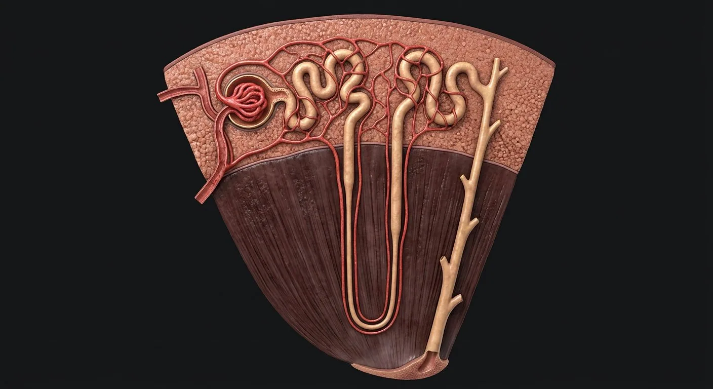
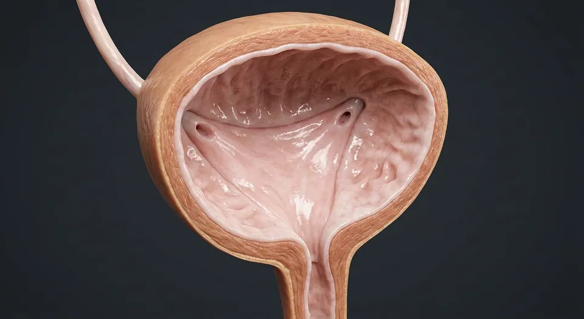

How this part of the body works
Each nephron begins with a glomerular capillary tuft inside Bowman capsule; the filtration barrier includes fenestrated endothelium, glomerular basement membrane and podocyte slit diaphragms. Filtrate enters proximal tubule, descends and ascends in the loop of Henle, then passes distal tubule into a collecting duct. Collecting ducts arise from a different embryologic lineage than nephron tubules. Peritubular capillaries and vasa recta reclaim water and solutes; juxtaglomerular apparatus links distal salt sensing to renin secretion.
Read the anatomy, part by part
These 18 structures correspond to the chapter’s regional illustration or schematic. Each entry separates location, function and a clinical point.
Afferent arteriole
Brings arterial blood into glomerular capillary tuft.
What it doesRegulates incoming glomerular pressure.
Clinical connectionDiameter influences filtration rate.
Glomerular capillaries
Fenestrated capillary loops between afferent and efferent arterioles.
What it doesPass plasma water and small solutes toward Bowman space.
Clinical connectionDamage may permit albumin or red cells into urine.
Efferent arteriole
Vessel leaves glomerulus and feeds downstream capillary network.
What it doesMaintains filtration pressure and supplies cortical/medullary beds.
Clinical connectionUnique arteriole between two capillary beds.
Bowman capsule
Parietal squamous layer and visceral podocyte layer enclosing Bowman space.
What it doesCollects primary filtrate from glomerulus.
Clinical connectionFiltrate flows from urinary pole to proximal tubule.
Filtration basement membrane
Specialized basement membrane shared by capillary endothelium and podocytes.
What it doesContributes size/charge selectivity.
Clinical connectionThickening or injury can alter permeability.
Podocyte foot processes
Interdigitating podocyte extensions with slit diaphragms over glomerular capillaries.
What it doesFinal cellular component of filtration barrier.
Clinical connectionEffacement accompanies proteinuric disease.
Mesangial cells
Cells and matrix between capillary loops inside glomerulus.
What it doesSupport capillaries, clear debris and modulate surface area.
Clinical connectionMesangial proliferation appears in several glomerular diseases.
Proximal convoluted tubule
Cortical segment with cuboidal cells and dense apical brush border.
What it doesReabsorbs most filtered water, sodium, glucose and amino acids.
Clinical connectionProximal injury can produce generalized solute loss.
Thin descending limb
Thin segment descending toward renal medulla.
What it doesHighly water-permeable component of countercurrent system.
Clinical connectionWater exits toward hypertonic medulla.
Ascending limb
Thin and thick ascending segments climb from medulla; thick limb actively transports salt.
What it doesDilutes luminal fluid and helps establish medullary gradient.
Clinical connectionThick ascending limb is relatively water-impermeable.
Vasa recta
Straight medullary capillaries especially from juxtamedullary efferent arterioles.
What it doesCountercurrent exchange preserves medullary gradient.
Clinical connectionMedullary hypoperfusion can injure deep segments.
Distal convoluted tubule
Cortical segment downstream of loop, including specialized macula densa region.
What it doesFine-tunes electrolyte handling.
Clinical connectionThiazides target distal NaCl transporter.
Macula densa
Distal tubular epithelial plaque where tubule contacts its own vascular pole.
What it doesSenses tubular salt and mediates tubuloglomerular feedback.
Clinical connectionPart of juxtaglomerular apparatus.
Juxtaglomerular cells
Modified smooth-muscle cells of afferent arteriole near vascular pole.
What it doesSecrete renin in response to regulatory signals.
Clinical connectionRenin initiates renin–angiotensin–aldosterone cascade.
Collecting duct
Receives distal connecting tubules from multiple nephrons and descends through medulla.
What it doesADH-sensitive water reabsorption and acid/base regulation.
Clinical connectionEmbryologically distinct from nephron proper.
Principal cells
Collecting duct epithelial cells controlling sodium and water channels.
What it doesRespond to aldosterone and vasopressin/ADH.
Clinical connectionADH resistance impairs urine concentration.
Intercalated cells
Acid/base-specialized collecting duct cells with subtype-dependent transport.
What it doesSecrete hydrogen or bicarbonate as appropriate.
Clinical connectionTubular acidification defects can cause acidosis.
Papillary duct
Terminal medullary collecting channel opening at renal papilla into minor calyx.
What it doesDelivers final urine to calyces.
Clinical connectionObstruction downstream backs urine toward collecting system.
Deeper structures and tissue layers
These 2 additional entries give anatomical context. They are deliberately not assigned a photographic pin on the regional image.
Glomerular endothelial fenestrae
Small pores in capillary endothelial cells facing filtration barrier.
What it doesPass plasma water while excluding blood cells.
Clinical connectionEndothelial injury can contribute to filtration defects.
Connecting tubule
Short distal nephron segment linking distal convoluted tubule to collecting system.
What it doesAdjusts electrolyte handling before shared collecting duct.
Clinical connectionAnatomically distinct from the collecting duct itself.
Five questions about Nephron · kidney microanatomy
Short answers grounded in the structures described above. Use the illustrated guide for anatomical context.
What are the main parts of a nephron?
A renal corpuscle filters plasma; proximal tubule, loop of Henle and distal tubule modify filtrate. Collecting ducts receive fluid from multiple nephrons.
Where does filtration occur in the kidney?
Filtration occurs across the glomerular capillary barrier into Bowman space in the renal corpuscle, mainly in the kidney cortex.
What is the bowman capsule?
Parietal squamous layer and visceral podocyte layer enclosing Bowman space. Function: Collects primary filtrate from glomerulus.
Where are the podocyte foot processes located?
Interdigitating podocyte extensions with slit diaphragms over glomerular capillaries. Function: Final cellular component of filtration barrier.
What is the function of the collecting duct?
Function: ADH-sensitive water reabsorption and acid/base regulation. Receives distal connecting tubules from multiple nephrons and descends through medulla.
Related anatomy guides
Follow these connected structures and body systems in the illustrated atlas.
 KidneyCoronal section plus a nephron: filtration, reabsorption, secretion and urine concentration.↗
KidneyCoronal section plus a nephron: filtration, reabsorption, secretion and urine concentration.↗
Urinary bladderA detrusor-muscle reservoir with a smooth trigone and a two-stage sphincter.↗ Vascular systemTwo trees from one pump: arteries deliver under pressure, veins return against gravity — with valves, shunts and plexuses throughout.↗
Vascular systemTwo trees from one pump: arteries deliver under pressure, veins return against gravity — with valves, shunts and plexuses throughout.↗Further reading
General anatomy references and related source chapters for continued study. These links do not make the digital illustrations clinical images or certify every anatomical variant.
This educational material does not provide medical advice, diagnosis or treatment. A named clinical reviewer has not been claimed for this page.
Open the interactive plate, pins, animated schematic and self-test.